Client Information
Tell us a bit about yourself.
Select a Dietary Restriction:Your targeted products
These products were picked according to your preferences.
Choose items to buy:
 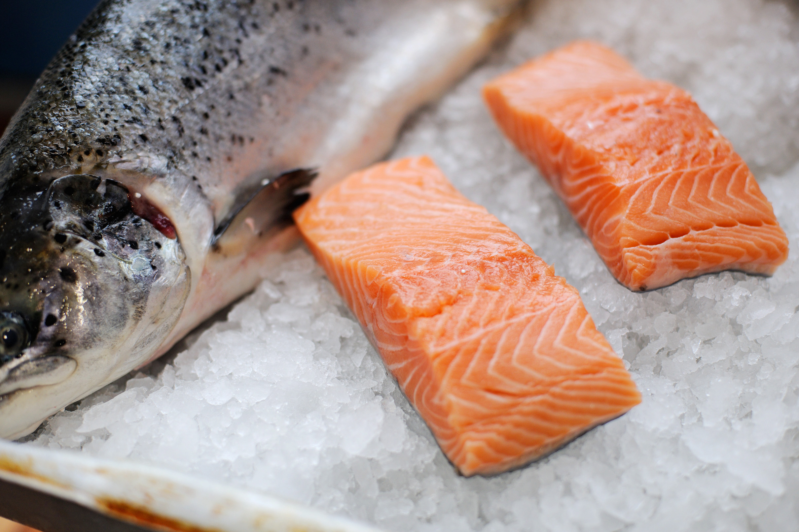
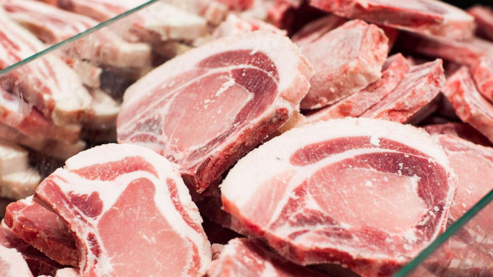
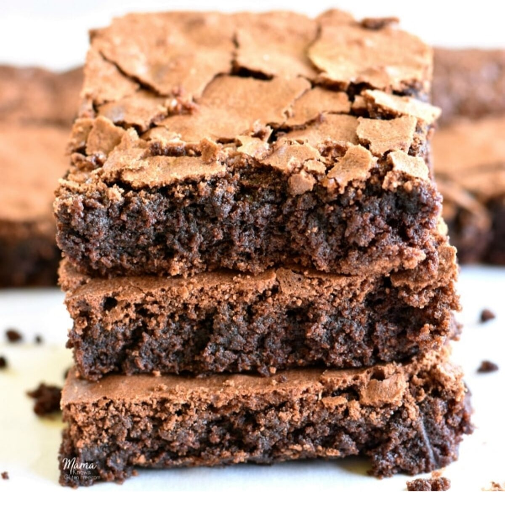
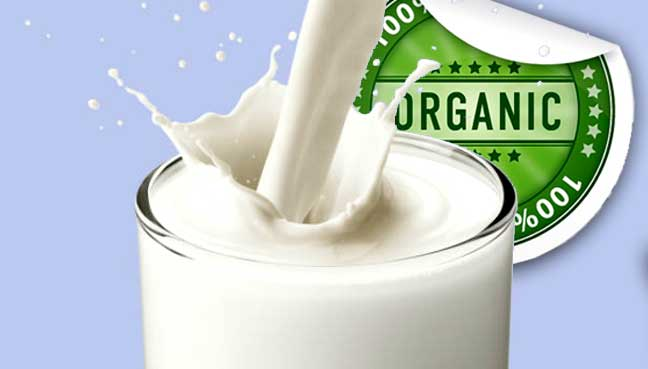
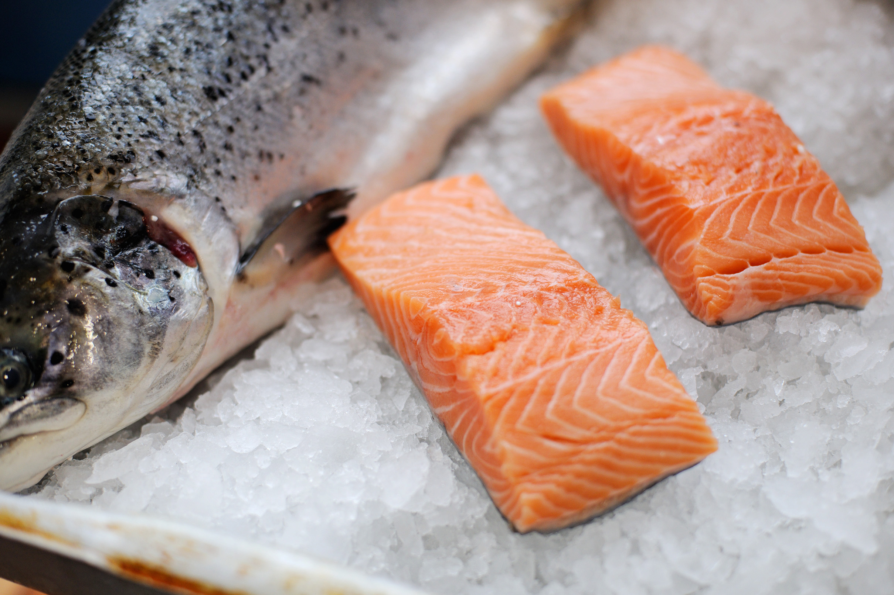
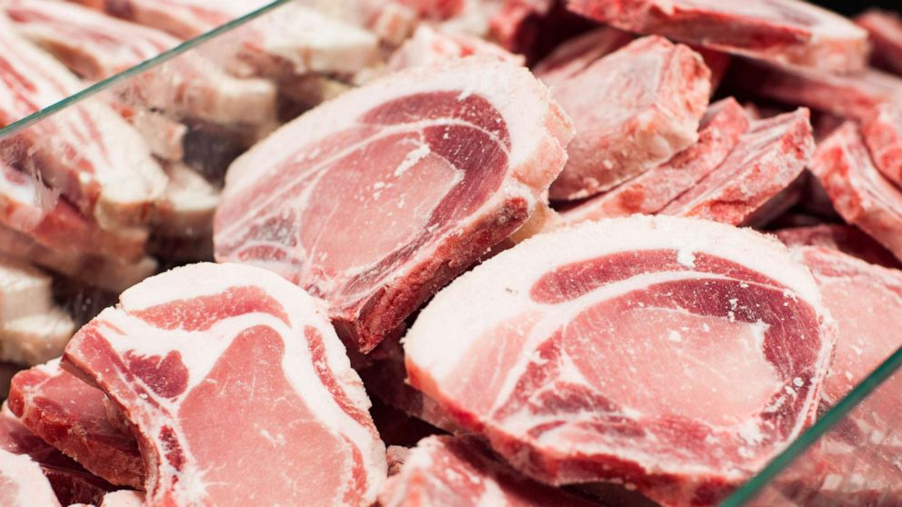
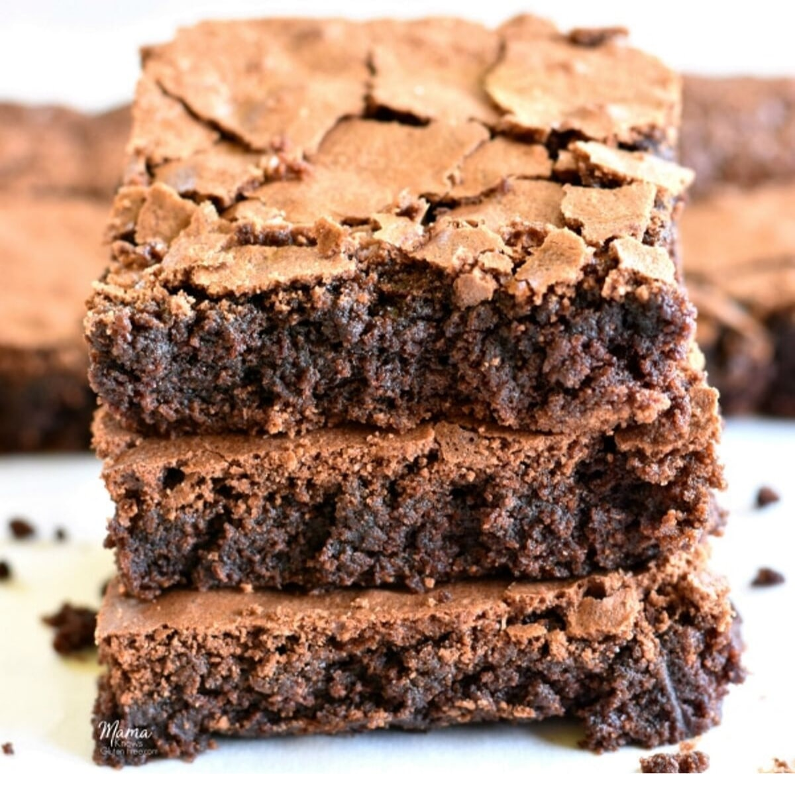
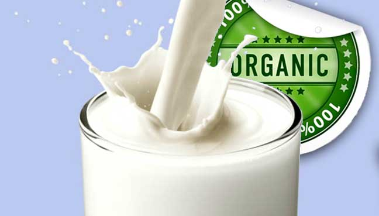
 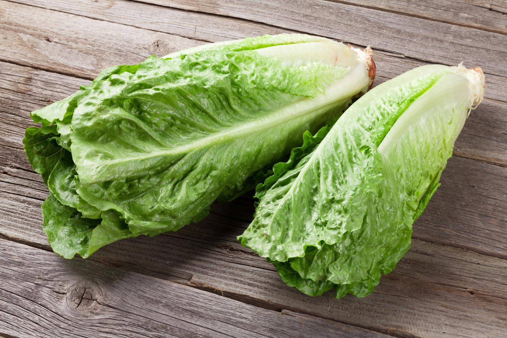
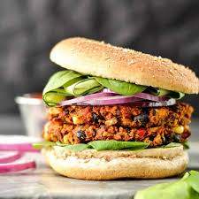
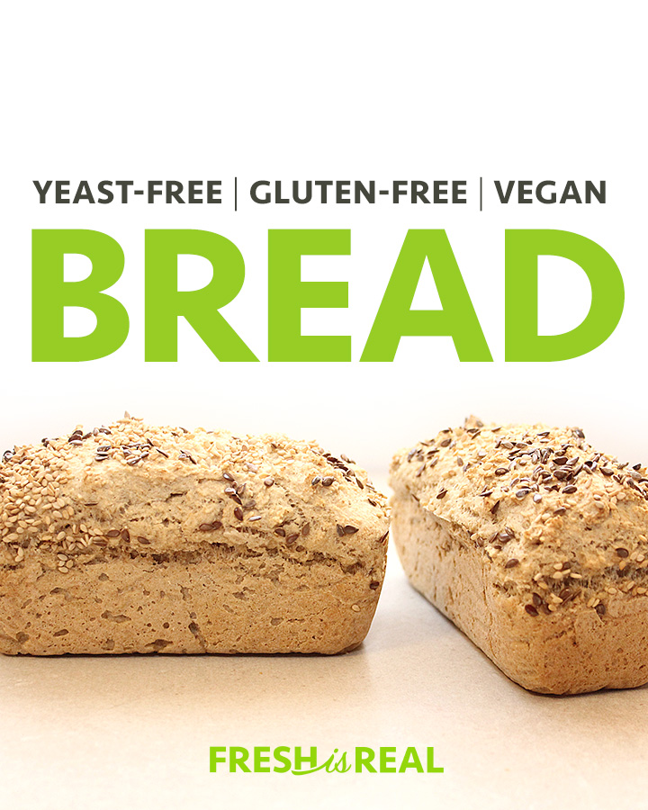
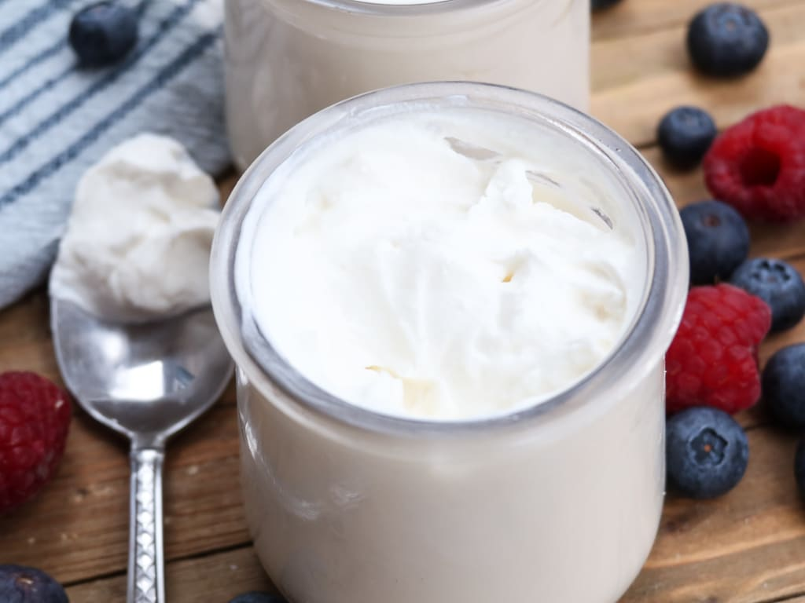
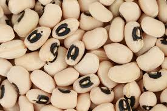
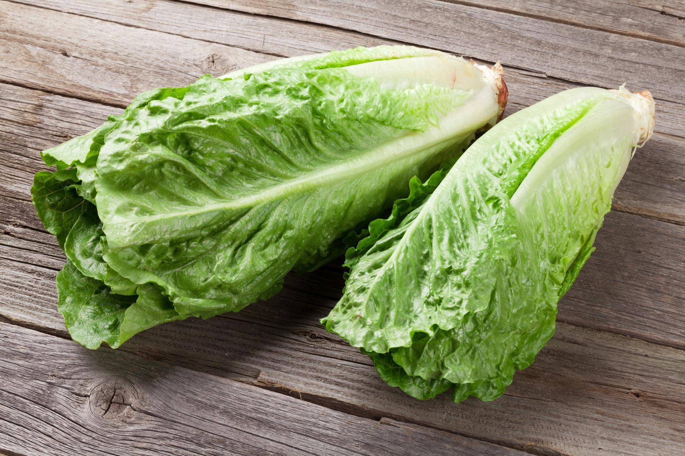
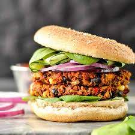
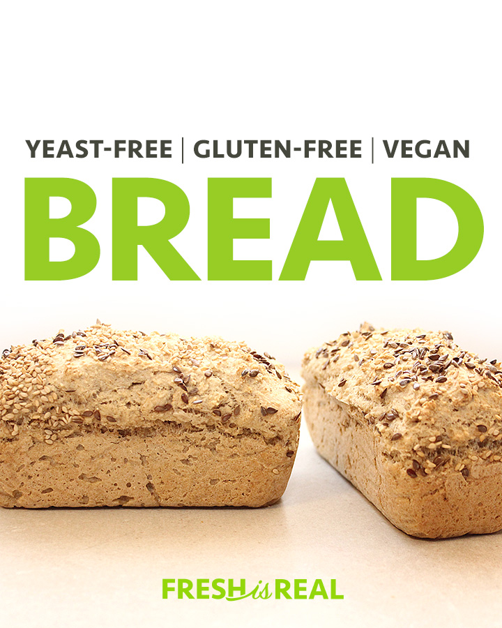
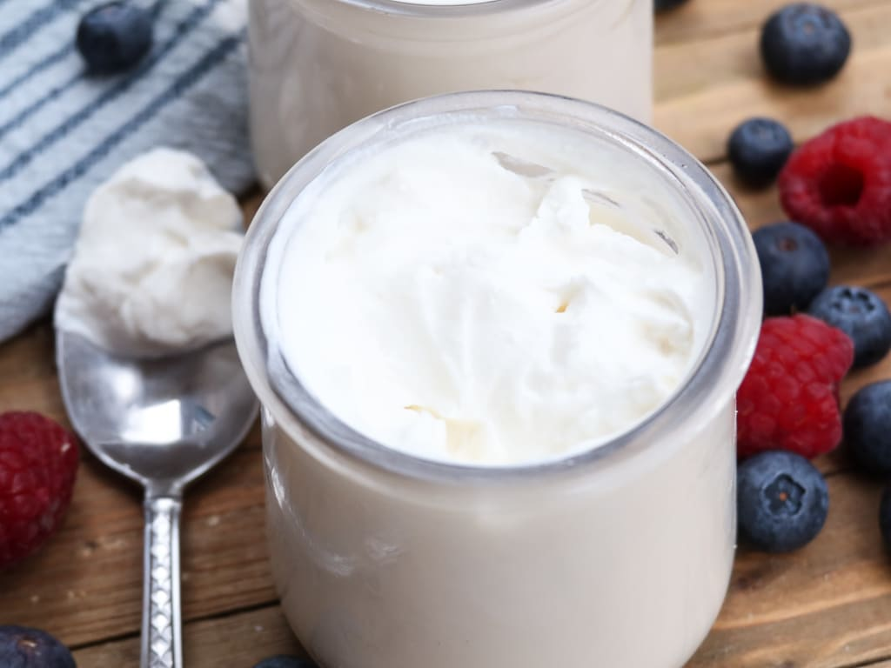
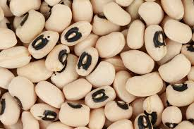
Cart
Your Shopping Cart.